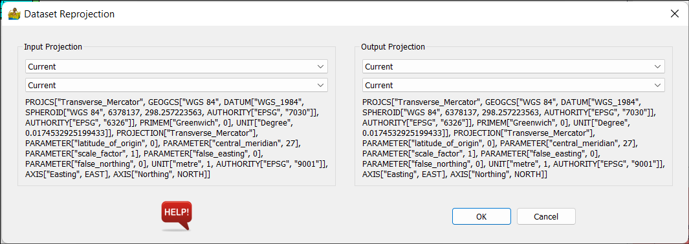

Raster Analysis: Description of Modules¶
Import Raster¶
This module imports raster data using the GDAL library, including ENVI, ER Mapper, GeoTIFF, Geosoft GXF and Surfer. It is possible to connect multiple imports to another module, thereby creating a ‘merged’ dataset. Please note that satellite image imports take place in the remote sensing menu.
Import RGB Image¶
This module will import 3 band tiff images for display in PyGMI as an RGB image.
Equation Editor¶
The equation editor allows for script operations to be performed on either single or multiple bands of data. It makes use of the powerful numexpr library for the scripting.
Use the variables iall, i1, i2 etc in formulas. The combo box on the interface shows which band is assigned to each variable.

Examples:¶
Sum:
i1 + 1000
Threshold between values 1 and 98, substituting -999 as a nodata value:
where((i1 > 1) & (i1 < 98) , i1, -999)
Commands:¶
Logical operators: &, | , ~
Comparison operators: <;, <=, ==, !=, >=, >
Arithmetic operators: +, -, , /, *, %, <<, >>
where(bool, number1, number2) : number1 if the bool condition is true, number2 otherwise.
sin, cos, tan, arcsin, arccos, arctan, sinh, cosh, tanh, arctan2, arcsinh,
arccosh, arctanh
log, log10, log1p, exp, expm1
sqrt, abs
Smoothing Filters¶
The smoothing filters work by passing a matrix which contains the filter over your raster dataset. The filter type, filter shape and the filter size can all be specified.

Filter Type¶
This can be either 2D median or 2D mean. Note that your choice of filter may affect the number of filter shape options you have.
Filter Shape¶
Box window - this is a regular square matrix with constant values applied to your dataset.
Disk window - this applies a disk of constant values to your dataset
Gaussian Window - this applies a Gaussian shaped filter to your dataset. This option is only present for the 2D mean filter type.
Filter Size¶
The options here are dependant on the option chosen in filter shape. They are as follows:
X and Y for the Box window - this is the number of rows and columns which will make up the box window
Radius in samples for the Disk window - this creates a disk of the specified radius. The disk will have 2*radius rows and columns
Standard Deviation for the Gaussian Window - this creates the Gaussian box window where the values have the standard deviation specified.
Automatic Gain Control¶
This calculates the AGC relating to your data.
Options:
Window Size - This is an odd number specifying the size of window (in units of pixels in both x and y directions) to pass over your data.
Mean - Calculates and AGC using mean values.
Median - Calculates and AGC using median values.
RMS - Calculates and AGC using rms values.

Normalisation/Scaling¶
Normalisation and scaling are the process of scaling your data to some predetermined range. It is often between 0 and 1, but can be according to a model. Normalisation and scaling are often used when comparing different types of data in routines such as cluster analysis.
Options:
Interval - This simply stretches the data values between 0 and 1.
Mean - This sets the mean of the dataset to 0, and the standard deviation of the dataset to +/- 1
Median - This sets the median of the dataset to 0, and the median absolute deviation of the dataset to +/- 1
8-bit histogram equalisation - this seeks to distribute the data equally across 255 values.

Gradient Calculation¶
The gradient calculation calculates the derivative of the data in the azimuth specified. It allows for the calculation of a conventional horizontal derivative, a derivative ratio (ratio of x and y derivatives) and a vertical derivative. Based on (Cooper and Cowan 2007).
Options:
Azimuth - Available for both calculations. This is the direction of the derivative, in the plane of the data.
Strength Factor - This is the strength of the derivative ratio. A value of 1 is recommended as a starting point.

Visibility Calculation¶
This calculates various visibility measures relating to your data (Cooper 2005). The measures are Total Visibility, Visibility Variation and Visibility Vector Resultant.
Options:
Window Size - This is an odd number specifying the size of window to pass over your data. The visibility is calculated for each window.
Viewing Height - This is the height of the observer above the surface.
Continuation¶
This is an upward and downward continuation for Magnetic and Gravity data. Upward continuation is performed using the standard FFT transform, while downward continuation used a Taylor expansion for extra stability.
The input is a raster dataset.
Options:
Band to Continue - This should be magnetic or gravity data.
Continuation type - This can be upward or downward.
Continuation distance - a positive number denoting the continuation distance.
Layer Stack and Resampling¶
This will allow datasets to be merged and resampled to a common cell size. It can also be used for a single dataset to be resampled. The resulting rows and columns of the new grid are displayed.
Options:
Cell size - This represents the size of a square raster grid cell, in the units of the grid (normally meters).
Common mask for all bands - This option forces the nodata areas to be the same on all bands.
Dataset Mosaic¶
This will allow datasets to be mosaiced. The input is a directory which contains ONLY data to be mosaiced.
If all files to be mosaiced have the same number of bands, in the same order (band name is not checked) then a fast mosaic will result. This is the default. Alternatively, the user can mosaic files with different numbers of bands, and only bands with common names will be mosaiced. This option is slower. If files being mosaiced have z values which are offset, the user can select to shift the bands to their respective median value prior to mosaic to minimise this. In this case a slower mosaic will result.
General Options:
Batch directory - location of files to be mosaiced.
Shapefile for boundary - This is an optional location for a shapefile to be used to cut the merge to a specific boundary.
Mosaic by band labels, since band order may differ, or input files have different numbers of bands. - checked by default.
Shift bands to median value before mosaic. May allow for cleaner mosaic if datasets are offset - unchecked by default.
Save each band separately in a mosaic directory - this is useful when the resultant mosaic is too large.
Mosaic Method:
Median - shift last file to median overlap value and copy over first file at overlap.
First - copy first file over last file at overlap.
Last - copy last file over first file at overlap.
Min - copy pixel wise minimum at overlap.
Max - copy pixel wise maximum at overlap.
Dataset Reprojection¶
This is a versatile routine allowing for the reprojecting of a dataset between two projections. All projections are obtained from EPSG codes.
Options:
The options are the same for both input and output projections. The choice of projection is obtained through drop boxes.
Cut Raster Using Polygon¶
This tool provides a quick way to cut out raster data, using a shape file as the boundary for the cut, and a larger raster file to cut from. You will need to prepare the shape file in another package first.
Extract Profile from Raster¶
This tool provides a quick way to extract a 1D profile from a raster dataset, using a shape file for the coordinates of the profile. You will need to prepare the shape file in another package first. Profiles can be exported or displayed via the context menu.
Raster Data Display¶
This allows for the display of data in a variety of ways common to most image processing packages. The resultant dataset can then be exported as a GeoTIFF for vector interpretation in a GIS package. Each display type is discussed below.

Display Type¶
Single Colour Map¶
This displays a single band of data by mapping its values to a colour map or colour table.
Contour¶
This has the same options as the single colour map, but displays the data using contours instead.
RGB Ternary¶
This option displays three bands, one red, one green and one blue. Because of this, no colour map can be chosen, and now three bands must be chosen. Histogram stretch is the same as for previous sections.
CMY Ternary¶
This option displays three bands, one cyan, one magenta and one yellow. As before, no colour map can be chosen, and now three bands must be chosen. Histogram stretch is the same as for previous sections.
Data Bands¶
The bands to be used in the main display are selected here.
Histogram Stretch¶
The choice of how to map the data is chosen here. The options are:
Linear with percent clip.
Histogram Equalisation (gives all colours the same amount of data samples, so that maximum change is seen in the map).
Full histogram with clip lines (this is an option to see the full histogram, even after percent clipping.
Colour Bar¶
Here you can choose the colour bar to map the colours with.
Sunshading¶
This option applies a sunshade algorithm to the data. The shader used is Blinn’s formula (Horn, 1981)
Sunshade data - this is the band to use for sunshading
Sun Angle - This is chosen by clicking on a small circular map. A blue dot denotes the sun’s azimuth and elevation.
Sunshade Detail - controls how much sunshade detail is present. Decrease this to increase the detail.
Light Reflectance - controls the light reflectance of the surface.
Save GeoTIFF¶
Use this to save your final maps as a GeoTIFF. This will also save two colour bars (one vertical and one horizontal) or a ternary colour bar. The size of the colour bar relates to how big you wish it to be on the paper map.